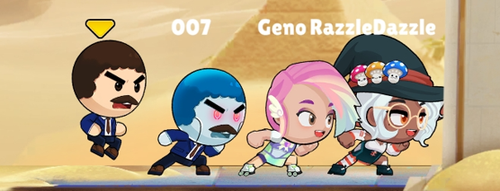
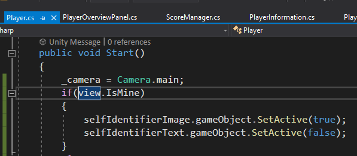
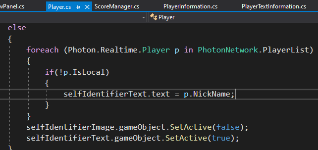
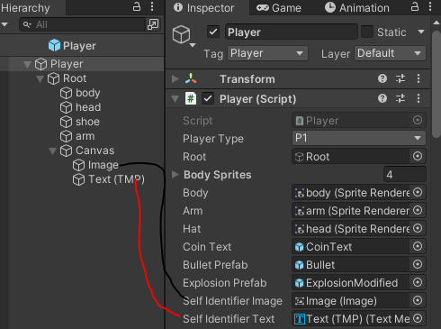
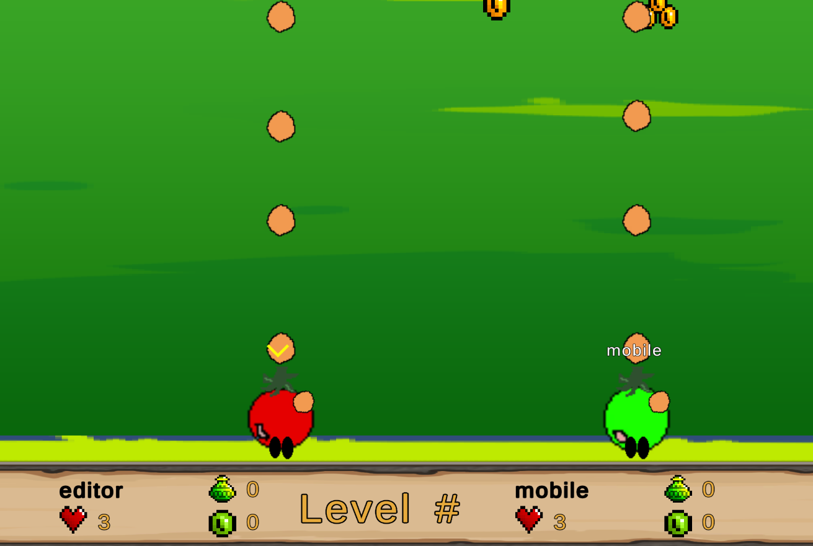
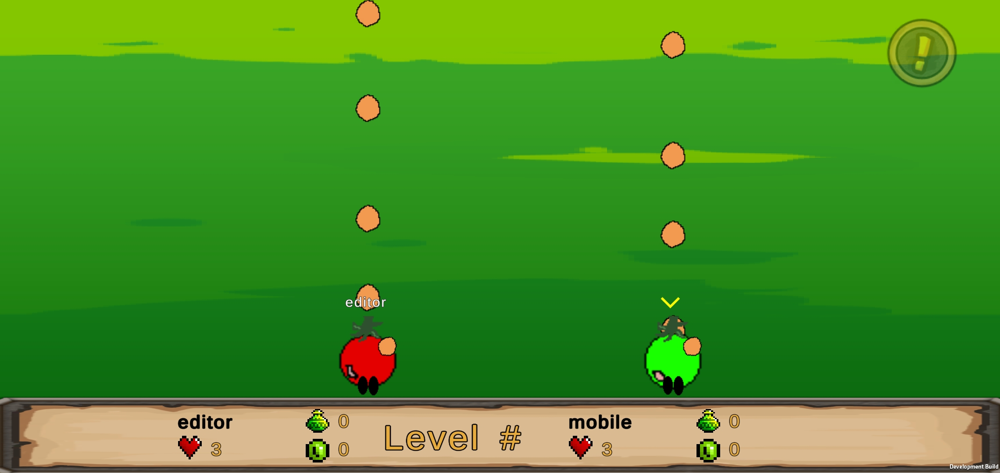

First Android Game - Part 10 - Self IdentifierAug 3, 2023This is part 10 of making my first Android Game. If you missed part9, you can find it hereI was playing a game made by GameHive called BattleRun, and I noticed that each player will display their name on top. However, if it is yourself, then there will be an arrow. I wanted to implement the same thing

In Player.cs, in the Start(), I check if it is the local player, if it is, disable the name which is a TextMeshPro UGUI, and enable the image component which is an arrow pointing at the local player

If it is not the local player, meaning your teammates. Then disable the image and enable the name. I would loop through the player list(in case there is ever more then 2 players, but if it is always 2 playerse, this loop is not needed since I already check for local player), and if it is not the local player, change the text to the player's nickname that was created at the start screen.

In the Player prefab, I create a canvas, set it to world space so that it would follow the player. Child the canvas under root gameobject so if the root gets disabled, so does the canvas. I add a image component and a TextMeshProUGUI component and assign them to the inspector

When I test it with the editor and mobile (their nick names are editor and mobile respectively), if I look at the editor, the local player has the arrow image, and the teammate which is the mobile displays the "mobile" nickname

if I look at the mobile, the local player has the arrow image, and the teammate which is the editor displays the "editor" nickname

That's it for this blog. Stay tuned for the next blog!Recent blogsSee all blogs